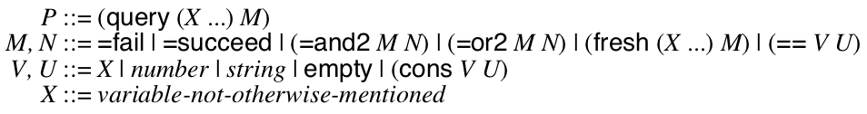

2.5 control
Refer to the exercise policy for details.
Write an implementation of logic programming using using either
first-class continuations or double-barrelled continuation-passing
style. (You could implement this in some language you already know (like
Racket, Python, C++, etc) or in ISWIM after extending your machine
with support for continuations and mutation.)
Logic programming is a kind of programming language like the "angelic
computation" we saw in class. Here’s a simple way to look at it:

The query and fresh forms bind the identifiers
X ... to fresh variables within M. When you
evaluate the P, you get a mapping from these identifiers to
values that satisfy the formula M. For example,
(query (X) (=or2 (== X 8) (== X 7))) would return either
8 or 7. But, (query (X) (=and2 (== X 8) (== X 7))) would fail because no assignment of X to any value
satisfies the formula.
This form of computation is powerful when combined with the rest of
ISWIM (or your favorite language.) For example, consider
(define (=parent x y) (=or2 (=and2 (== x "Khronos") (== y "Zeus")) (=and2 (== x "Zeus") (== y "Athena")) (=and2 (== x "Athena") (== y "Erichthonius")))) ; fails (query () (=parent "Zeus" "Paris")) ; succeeds with Who=Athena (query (Who) (=parent "Zeus" Who)) ; succeeds with Grandpa=Khronos and Pa=Zeus (query (Grandpa Pa) (=and2 (=parent Grandpa Pa) (=parent Pa "Athena")))
This is even more powerful when such functions are used recursively:
(define (=ancestor x z) (fresh (y) (=and2 (=parent x y) (=parent y z)))) ; succeeds with Who=Zeus and Who=Kronos (query (Who) (=ancestor Who "Athena"))
There are a lot of strategies for implementing this, but the most
beautiful implements =succeed, =fail,
=and2, =or2, ==, fresh, and
query as normal functions in your language (that internally
use first-class continuations.) My implementation is 18 lines in
Racket.